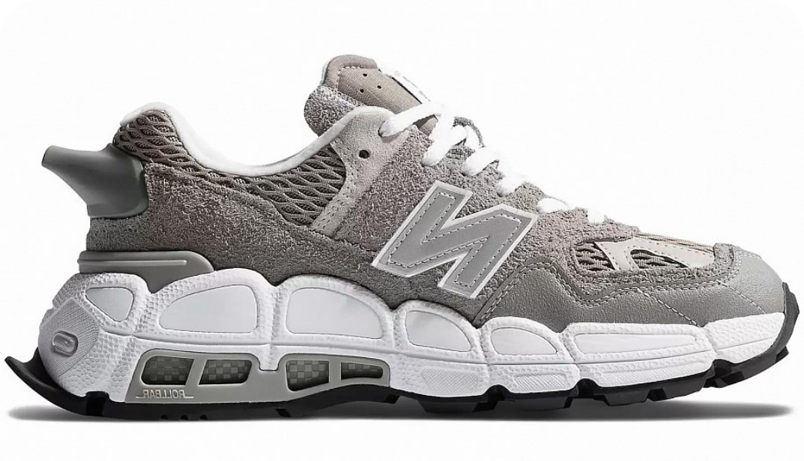

<!Doctype html>
    <html lang="ru"></html>
<head>
    <link rel="stylesheet" href="kartohka.css">
      <meta charset="utf-8">
      
      <meta name="viewport" content="width=device-width, initial-scale=1.0">
    <title>The New Balance C-ms574. </title>
</head>
<body class="body">
  <main class="header">       
    <div class="background-color">
        <a href="file:///C:/Users/Alena/Pictures/Проектная%20работа/Проектная%20работа%202/Главная%20страница/Кроссы.html"><div class="logo"></div></a>
<nav>
  <ul>
   <li><a href="https://web.telegram.org/a/" ></a></li>
   <li><a href="https://vk.com"></a></li>
   <li><a href="https://www.youtube.com/">  </li></a>
   </ul>
</nav>
</div>       
  </header>

  <main class="main">
    <div class="DPcontainer">
    <div class="container">

<div class="name">
    <h1>The New Balance C-ms574</h1>
        <h2>Salehe Bembury Shark Skin</h2>
            <p>Компания New Balance изначально занималась производством стель и ортопедической обуви в начале 20-го века в Бостоне, США. Сегодня, New Balance — это мировой бренд, производящий спортивную одежду и обувь для активного отдыха и спорта. Кроссовки New Balance отличаются удобством, стабильностью, качеством и современным дизайном.<br><br>Благодаря технологиям, таким как Encap и Abzorb, обувь этого бренда обеспечивает оптимальную амортизацию и поддержку стопы, делая её популярной среди спортсменов и любителей активного образа жизни. Кроме этого, New Balance заботится о внешнем виде своей продукции, предлагая разнообразие моделей и цветовых решений, от классических до ярких и стильных.<br><br> Кроссовки New Balance предназначены для различных видов деятельности: бега, ходьбы, тренировок в зале и повседневной носки. Они сочетают в себе комфорт и функциональность, а также удовлетворяют потребности как профессиональных спортсменов, так и любителей спорта. Благодаря широкому ассортименту, каждый может выбрать подходящую для себя модель.</p>       
</div>
<div class="table">
    <div class="text1">
        <h3>О кроссах</h3>
    </div>
    <div class="text1">
        <h4>Дата выхода</h4>
            <div class="text2">
                <h4> 02/12/2023</h4> 
            </div>
    </div>
    <div class="text1">
        <h4>Розничная цена</h4>
        <div class="text2">
            <h4>250€</h4> 
        </div>
    </div>
    <div class="text1">
        <h4>Материалы</h4>
        <div class="text2">
            <h4>Замша 100%, резина</h4> 
        </div>
    </div>
</div>

    </div>
    </div>


    </main>

    <main class="footer">
        <div class="background-color2">    
            <a href="file:///C:/Users/Alena/Pictures/Проектная%20работа/Проектная%20работа%202/Главная%20страница/Кроссы.html"><div class="logo2"></div></a>
          <nav>
            <ul>
             <li> <a href="https://web.telegram.org/a/" ></a></li>
             <li><a href="https://vk.com"></a></li>
             <li><a href="https://www.youtube.com/">  </li></a>
             </ul>
          </nav>       
        </div>
    
        <div class="Fop">    
        </div>
        
        <div class="text_two">
          <p class="Flotters">КРОССЫ И ТОЧКА ® 2023</p>
        </div>
    
    
    </footer>
    
    </body>
    </html>
    </html>